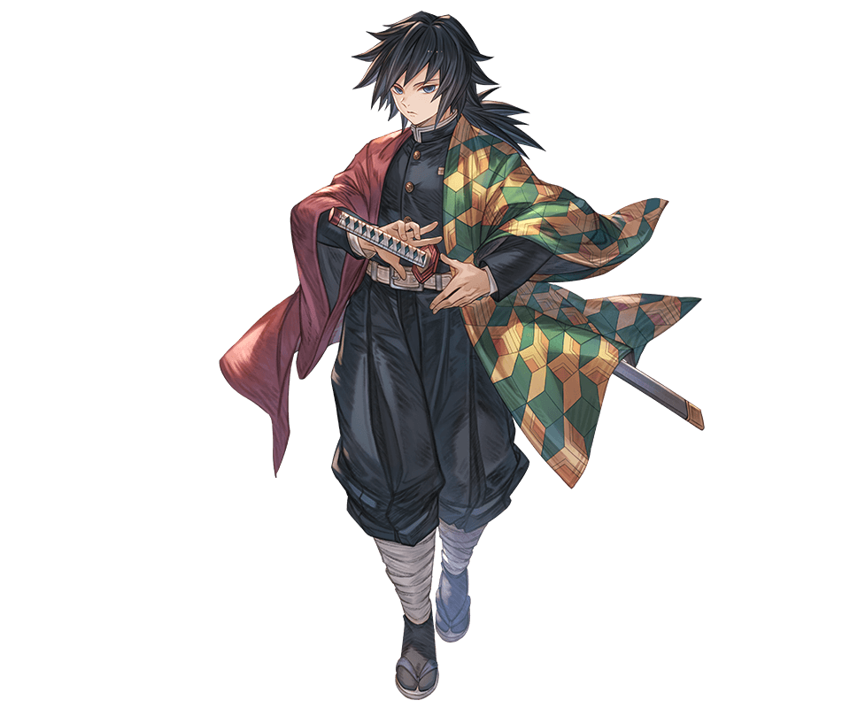

São lâminas especiais usadas e fabricadas especificamente para os Caçadores de Demônios
para matar Demônios. Elas são forjadas a partir de um minério único que absorve constantemente a luz do sol,
uma das únicas fraquezas principais dos Demônios. Portanto, a decapitação por uma lâmina Nichirin é uma das
únicas maneiras pelas quais um humano pode matar um demônio, sendo a outra o uso de uma arma revestida com
veneno de glicínias.
Quando despertada, dá ao seu usuário um aumento gigantesco em sua capacidade física, a
ponto de sua velocidade e força física nem serem comparáveis as de quando estava sem a marca ela
potencializa a respiração do usuario, porem ela cobra um preço a altura desse poder, todos que tem a marca
despertada morre antes do 30, a marca consome tempo de vida por esse poder absurdo, a algumas maneiras de se
desperta a marca, a mais rara é nascendo com ela,outra maneira é sendo um caçador muito forte, e a ultima é
durante uma luta entre a vida e a morte ela é despertada, como acontenceu com sanemi, tomioka e Gyomei.
Descrição dos Hashiras
Hashiras é uma classe de caçadores de Onis, eles são a elite, os mais poderosos espadachins, porem
mesmo sendo muito fortes eles tem extrema dificuldades em enfrentar os ONIS LUAS SUPERIORES.

Obanai é um Hashira frio e ardiloso, ele utiliza a respiração da serpente e é de extrema eficiencia
em terrítorios desconhecidos, Obanai é conhecido por sua personalidade severa e exigente quando se
trata da Demon Slayer Corps e seus guerreiros. Ele tem uma imensa devoção à Organização e pensa
sobre o futuro dela, colocando seu dever acima de sua integridade física e de seus companheiros. Um
bom exemplo disso é que durante o arco do Distrito do Entretenimento, Obanai repreende Uzui por sair
gravemente ferido após enfrentar o “Lua Superior mais fraco”.

Sanemi apesar de sua aparencia assustadora tem um coração gentil e caloroso mais ele esconde tudo
isso com violencia e teimosia devido a tudo que sofreu no passado, onis invadiram a casa dele e
transformarma a mae dele em um demonio e assim ele perdeu todos seus irmãos, e para salvar o que
restou ele acabou matando a propria mae, depois disso caçou onis incansavelmente até se tornar um
HASHIRA e usuario da respiração do vento!

Tengen Uzui é o unico Shinobi ainda vivo em Demon slayer, Tengen é um indivíduo excêntrico e
chamativo, sempre querendo ser “extravagante”. Ele geralmente é visto falando com orgulho,
proclamando que ele é “deus” na frente de Tanjiro, Zenitsu e Inosuke e exigindo que eles o tratem
assim, alem disso ele é um Hashira que utiliza a respiração Sonora derivada da respiração do trovao
e usa duas nichirin(katanas que matam demonios)

Gyomei é o Pilar da Pedra dos Caçadores de Demônios. Sendo o Pilar ativo mais velho e o mais forte
entre todos os Caçadores de Demônios,Gyomei encarna o arquétipo gigante gentil, sendo
surpreendentemente de fala mansa e sensível, apesar de sua aparência intimidadora. Ele também se
mostra bastante piedoso, carregando suas contas de oração em todos os momentos e fazendo orações em
situações pungentes.
Embora ele mantenha uma disposição bastante reservada, Gyomei abriga uma visão muito objetiva e um
tanto desconfiada das pessoas ao seu redor, devido a suas experiências antes de se tornar um Caçador
de Demônios. Ele está sempre ciente do que os outros, principalmente crianças ou crianças mais novas
que ele, são capazes de receberem a oportunidade. Por causa de sua natureza duvidosa, pode demorar
um pouco para Gyomei aceitar e confiar completamente nos outros.

Shinobu é uma Caçadora de Demônios e o atual Pilar dos insetos. Sendo a irmã mais nova da antiga
Pilar ama o tomioka,Shinobu é uma garota pequena, com pele pálida e olhos grandes e de aparência
composta que não possuem pupilas, apenas uma névoa de roxo degradê, que faz com que seus olhos
pareçam semelhantes aos dos insetos. Ela tem cabelos na altura dos ombros, que desbotam do preto
para o roxo escuro, geralmente na parte de trás da cabeça, no estilo "yakai-maki" e presos com um
ornamento de borboleta branco e roxo. Ela dividiu a franja na altura da orelha que se ergue um pouco
da cabeça antes de cair para emoldurar o rosto, com dois fios mais finos na altura do queixo abaixo
deles.

Kyojuro Rengoku pertence a uma família destinada ao mundo dos Hashiras, isso porque seu pai,
Shinjuro Rengoku, já era um Hashira quando Kyojuro Rengoku nasceu. Nesse sentido, Shinjuro foi quem
ensinou as técnicas das Chamas ao personagem, passando, de pai para filho, os ensinamentos de um
Pilar das Chamas.
No entanto, o jovem Kyojuro Rengoku não era obstinado a ser um Hashira como seu pai, e então, o
único motivo que fez despertar as chamas no futuro Pilar foi a morte de sua mãe. A mãe de Rengoku,
antes de falecer, incentivou o personagem a usar sua força para o bem e para ajudar as pessoas.
Desse modo, essas palavras foram responsáveis pelas chamas que aqueceram o propósito e iluminaram o
caminho de Kyojuro Rengoku.

Muichiro Tokito é um personagem coadjuvante da obra Demon Slayer, ele é um exterminador de demônios
e o atual Hashira da Névoa (Kasumi Bashira). Ele e seu irmão Yuishiro são descendentes do Lua
Superior de número 1 Kokushibo (Michikatsu Tsugikuni).

Giyuu Tomioka é um Caçador de Demônios e o atual Pilar da Água. Ele aparece no primeiro capítulo
para matar Nezuko por ela ser um demônio, mas pela insistência de Tanjiro ele a poupou contato que o
mesmo se torna-se um Caçador de Demônios. Ele junto a outros Pilares aparece mais tarde para salvar
Tanjiro e os outros além de matar o Demônio da Lua que os atacou

Mitsuri sofria bullying pela seu cabelo rosado e sua força descomunal,por isso foi abandonada no
altar, depois de viver mediocremente e triste com sua situação, foi encontrada por kagaya(mestre dos
hashiras),pediu que abraçasse seus dons e se juntasse a eles, apos treinamento intenso virou dupla
de rengoku pilar das chamas, e em uma batalha ardua desenvolveu sua respiração a respiração do amor
© Desenvolvido por Thiago Pequeno SPTECHER Duvidas mande um email: thiago.castro@sptech.school